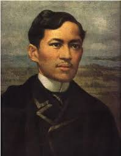
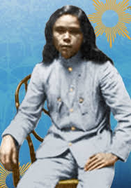
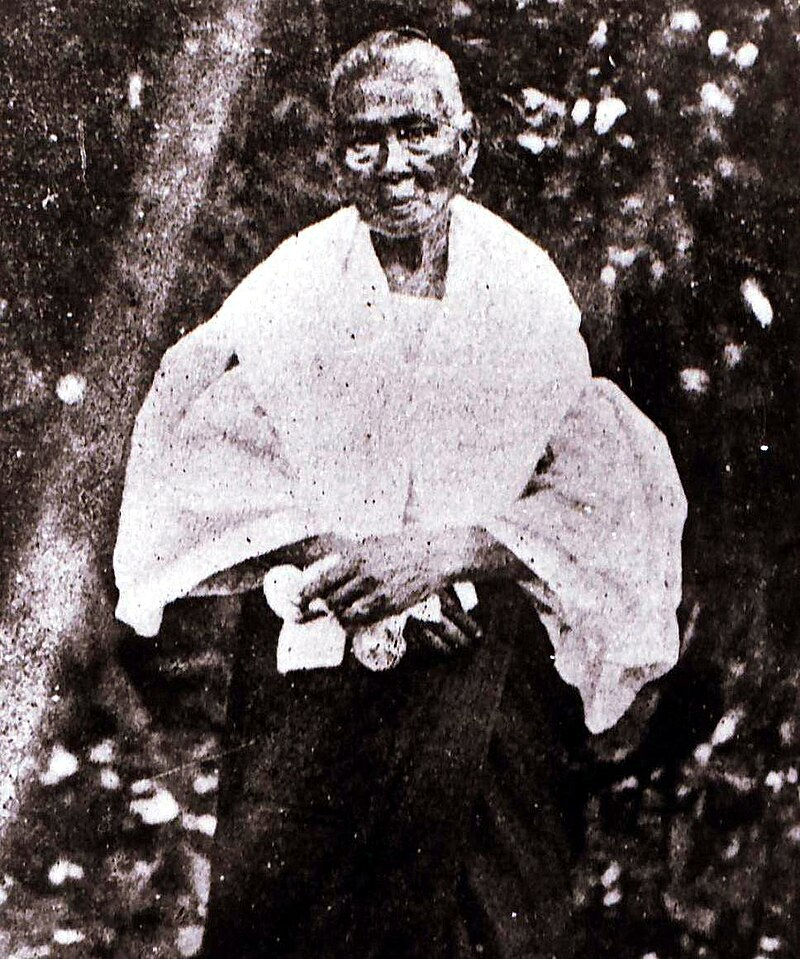
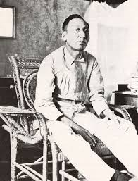

Notable Figures
| Photo | Name | Birth & Death | Known for | Source |
|---|---|---|---|---|
|  | Jose Rizal | Born: June 19, 1861 Died: September 20, 1896 |
Jose Protasio Rizal Mercado y Alonso Realonda was a Filipino writer, nationalist, & novelist, commonly known for fighting against the Spanish Government through his works (Noli Me Tangere, El Filibusterismo), and continously promoting Philippine Nationalism. His life is honored as the Philippines' "National Hero". | Jose Rizal |

| Gabriela Silang | Born: March 19, 1731 Died: September 20, 1763 |
Women under the Spanish Cancer were chained, opressed, undermined, & did not have as much freedom as the other men did. Gabriela Silang, one of the many women, rose to lead a revolt to not only bring justice to the poor women, and to overthrow the Spanish Government. | Gabriela Silang |
|  | Macario Sakay | Born: March 1, 1878 Died: September 13, 1907 |
During the Filipino-American War, Macario Sakay, along with other Filipino comrades, organized forces and a constitution highly based on Andres Bonifacio's Katipunan. Unfortunately, Sakay was thrown into prison and later on, died, but at the cost of sacrificing his life for the betterment of the innocent Filipinos. | Macario Sakay |
|  | Melchora Aquino | Born: January 6, 1812 Died: February 19, 1919 |
Melchora Aquino, also known as "Tandang Sora" because of her old age in the midst of the on-going Philippine Revolution. Despite her old age, she significantly helped in providing medication to the injured Filipinos. | Melchora Aquino |
|  | Apolinario Mabini | Born: July 23, 1864 Died: May 13, 1903 |
Apolinario Mabini was also known as "The & Conscience of the Philippine Revolution" because of his open-minded personality and his role as the first prime minister in the Philippine Government. | Apolinario Mabini |